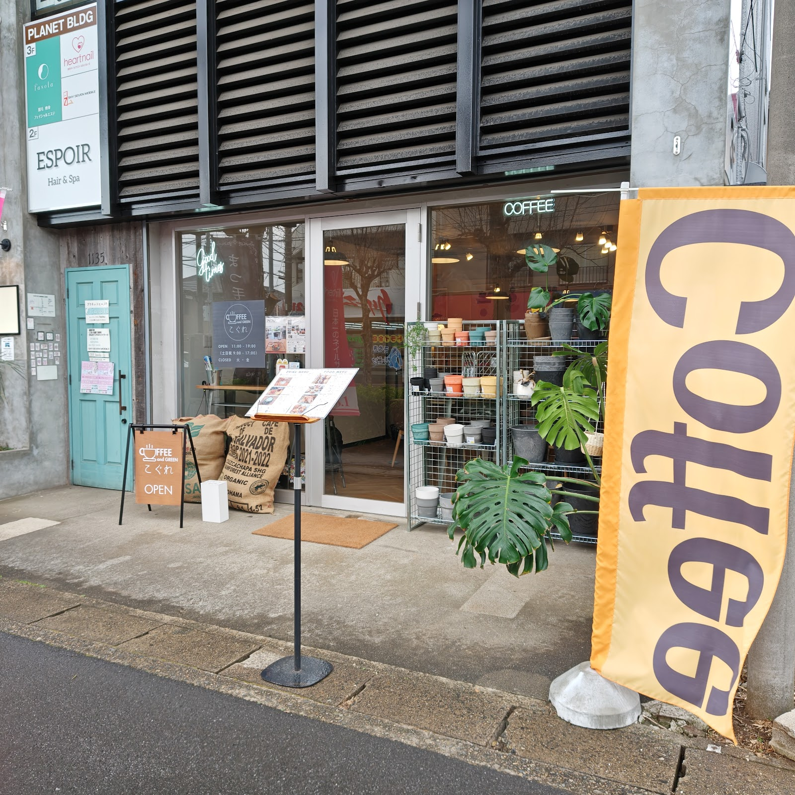
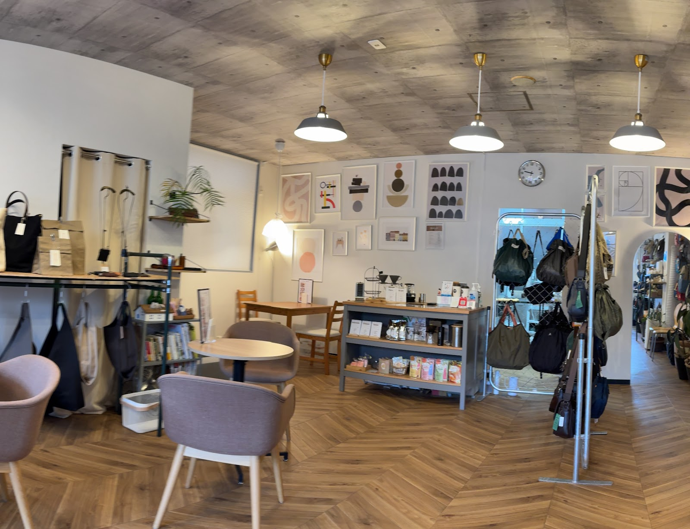
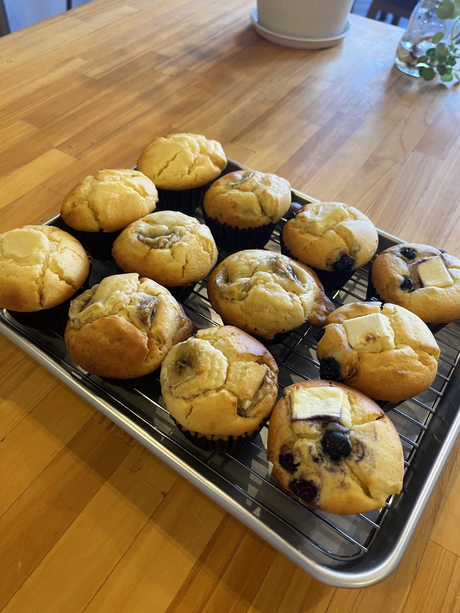
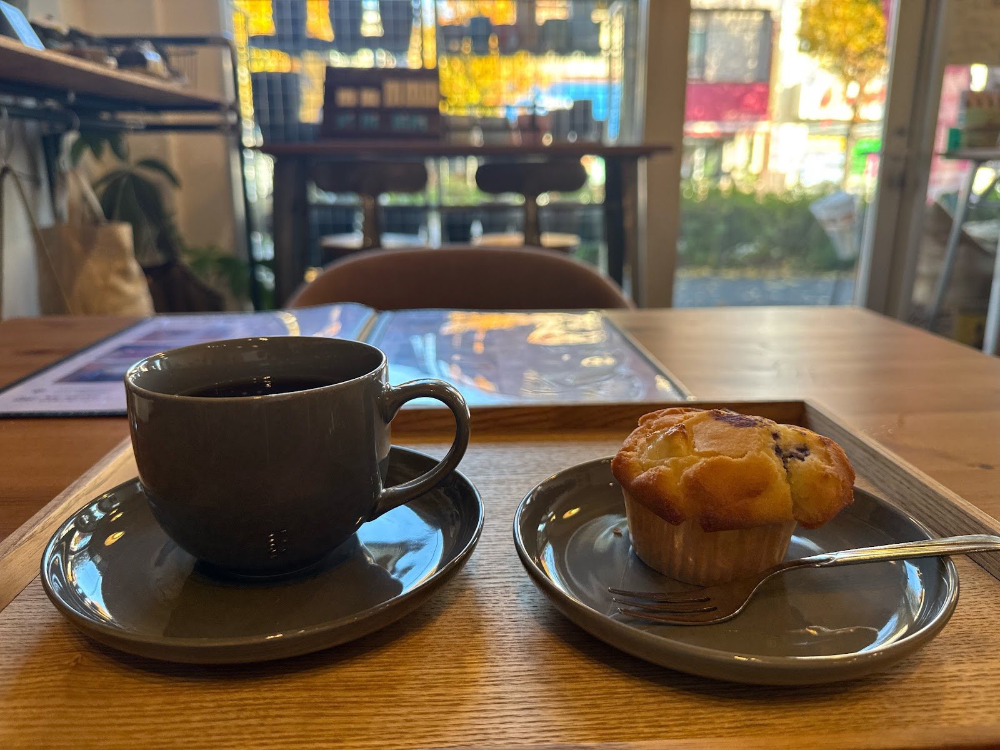
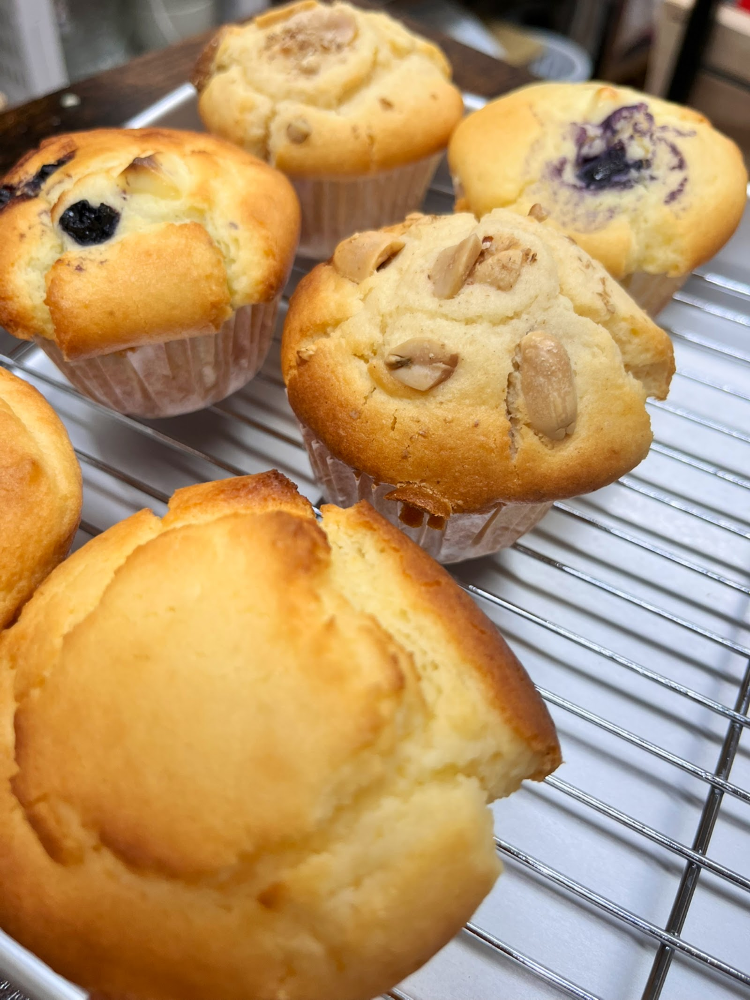
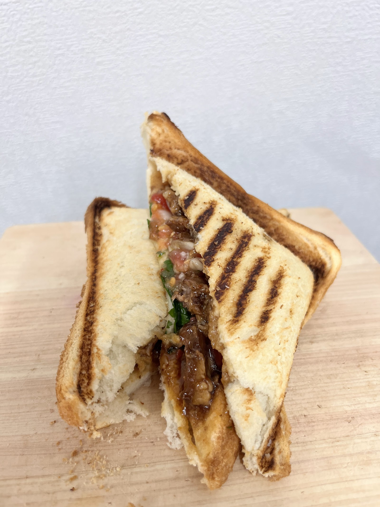
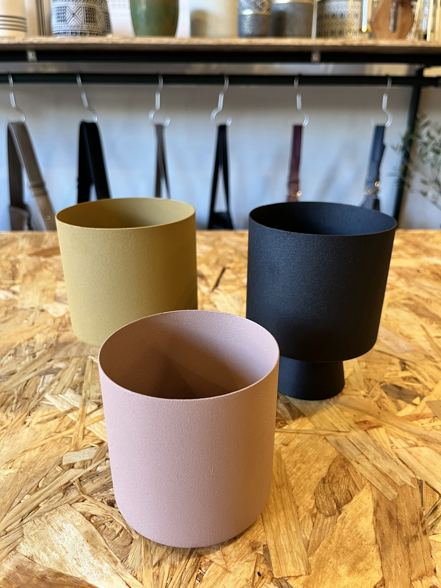

Gallery
ギャラリー
COFFEE AND GREEN こぐれの店内やメニュー、雑貨の様子を写真でご紹介します。最新の様子はInstagram(@cogrey_tky)でもご覧いただけます。
COFFEE AND GREEN こぐれの写真
外観
天王台駅から徒歩3分、プラネット1Fの入り口です。

Photo: まつけんアニー店内
観葉植物や雑貨が並ぶ、カフェと一体になった店内の様子です。

Photo: Shupa Shupaフード&ドリンク
オーガニック・無農薬のコーヒーと、手作りの焼き菓子です。

Photo: COFFEE AND GREEN こぐれ
Photo: gokigen panda
Photo: COFFEE AND GREEN こぐれ
Photo: COFFEE AND GREEN こぐれ雑貨
バッグ・アロマ・観葉植物など、セレクトショップの商品です。

Photo: COFFEE AND GREEN こぐれ実際の空気感を確かめに、ぜひお立ち寄りください。